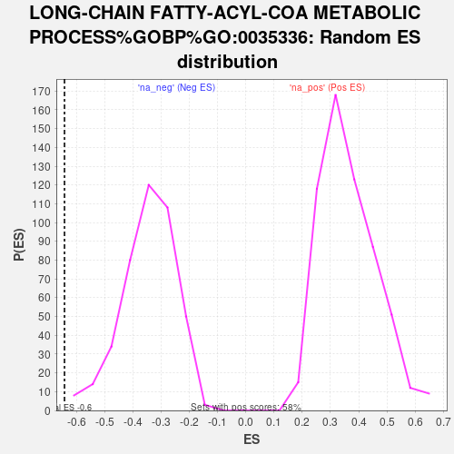

| | | Dataset | ag_ranks |
| Phenotype | NoPhenotypeAvailable |
| Upregulated in class | na_neg |
| GeneSet | LONG-CHAIN FATTY-ACYL-COA METABOLIC PROCESS%GOBP%GO:0035336 |
| Enrichment Score (ES) | -0.6431262 |
| Normalized Enrichment Score (NES) | -1.8629863 |
| Nominal p-value | 0.0 |
| FDR q-value | 0.123292565 |
| FWER p-Value | 0.909 |
Table: GSEA Results Summary
 Fig 1: Enrichment plot: LONG-CHAIN FATTY-ACYL-COA METABOLIC PROCESS%GOBP%GO:0035336
Fig 1: Enrichment plot: LONG-CHAIN FATTY-ACYL-COA METABOLIC PROCESS%GOBP%GO:0035336
Profile of the Running ES Score & Positions of GeneSet Members on the Rank Ordered List

Fig 2: LONG-CHAIN FATTY-ACYL-COA METABOLIC PROCESS%GOBP%GO:0035336: Random ES distribution
Gene set null distribution of ES for LONG-CHAIN FATTY-ACYL-COA METABOLIC PROCESS%GOBP%GO:0035336